Memória da marca
Histórias e bastidores da Paris Elysées
Casos contados por quem viveu a história da marca desde os anos 1990. Para cada um, separamos o que é certo do que é lembrança ou estimativa.
1994 a 1997: patrocinadora geral do Spartak de Moscou e o antigo camarote de Brejnev
De 1994 a 1997, a Paris Elysées foi a patrocinadora geral do time de hóquei no gelo Spartak de Moscou, um dos clubes mais tradicionais do esporte na Rússia. O nome da marca estava nas camisas dos jogadores, nas placas ao redor da pista e até pintado sob o gelo, no meio da quadra.
Na mesma época, a Paris Elysées patrocinou o concurso Miss Rússia. Foi desse patrocínio que nasceu o perfume Miss Elysees.
Em agosto de 1996, a marca também esteve entre os patrocinadores da Copa Spartak, torneio internacional de clubes disputado no Palácio do Gelo Sokolniki, em Moscou.
Como patrocinador principal, Jean-Jacques Vola, fundador da marca, tinha direito a assistir aos jogos de um camarote muito especial: o que tinha sido, anos antes, o camarote de Leonid Brejnev, o antigo dirigente soviético, conhecido como grande torcedor de hóquei. Para uma marca de perfumes francesa que tinha chegado havia pouco à Rússia, era um sinal de quanto o nome Paris Elysées já era conhecido por lá.
Fotos e documentos do arquivo da Paris Elysées:
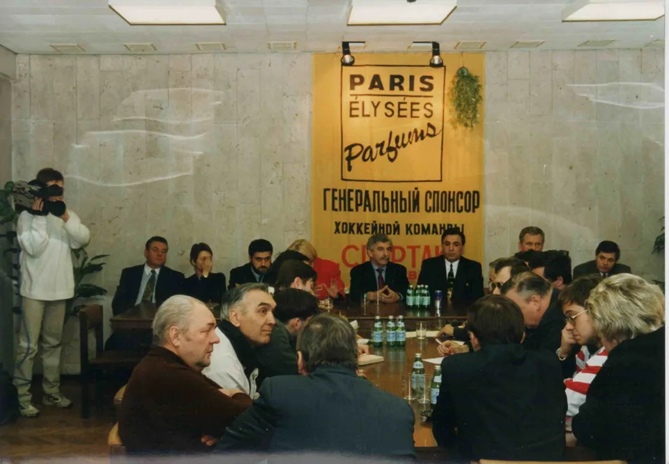
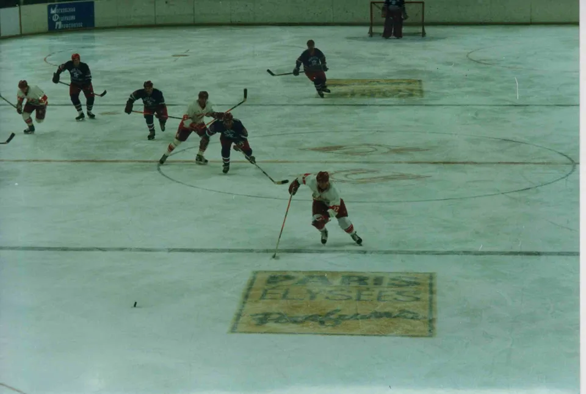
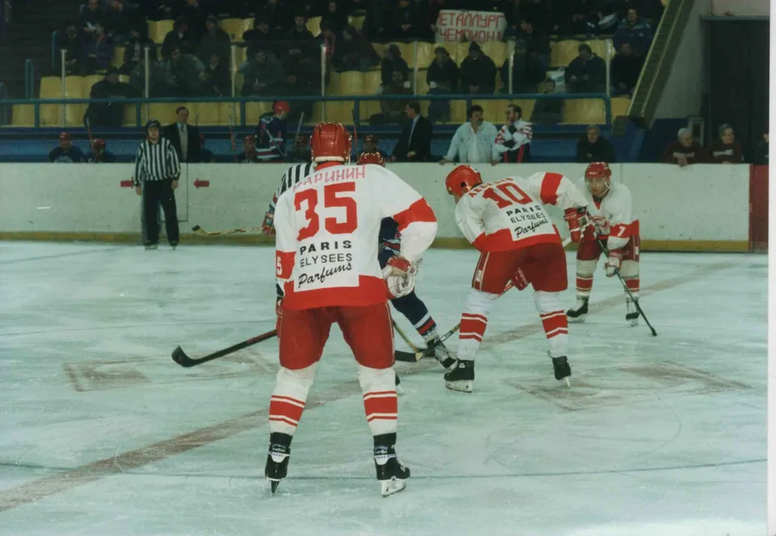
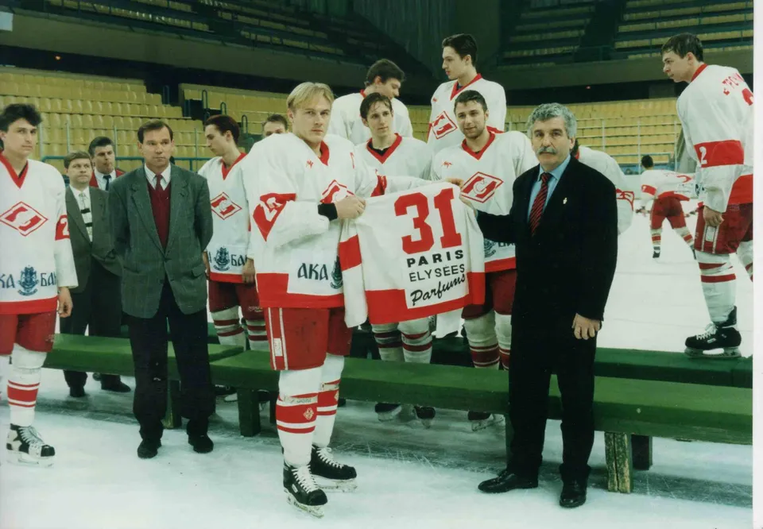
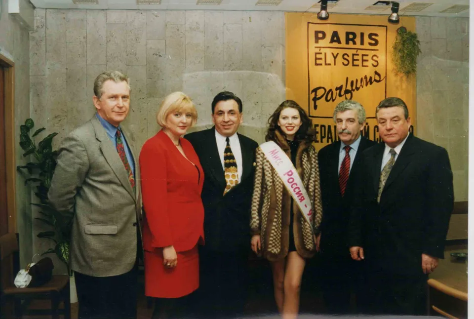
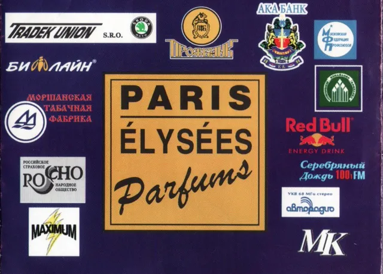
O que é certo
O patrocínio geral do Spartak de Moscou entre 1994 e 1997, documentado pelas fotos de arquivo da marca (camisas, placas, logotipo sob o gelo, faixa “patrocinador geral” em russo) e pelo folheto da Copa Spartak de agosto de 1996.
O que é lembrança
O camarote de Brejnev é um relato da família fundadora, de 1994, sem foto nem documento: contamos como lembrança, não como fato comprovado.
Fontes: RUDN Journal of Russian History: Brejnev, “o torcedor número um de hóquei no Kremlin”.
Dezembro de 1996: dois Antonov cheios de perfume para Moscou
Em dezembro de 1996, uma das ondas de frio mais fortes da década atingiu a Europa: a partir de 23 de dezembro, estradas ficaram bloqueadas pela neve e pelo gelo, e em Moscou os termômetros passaram de 25 graus negativos. Nenhum caminhão conseguia levar mercadoria a tempo das festas de fim de ano, o período mais importante do ano para o comércio russo.
Para não deixar as lojas sem Paris Elysées, Jean-Jacques Vola, fundador da marca, fretou um Antonov, um dos maiores aviões de carga do mundo. Foram duas viagens a partir do aeroporto de Orly, em Paris, com o avião carregado até a capacidade máxima.
A bordo estavam os grandes sucessos da época: Dollar, King, Cosa Nostra, Number One e a linha Vodka. Pelos nossos cálculos, cada viagem levou cerca de 300 mil perfumes, o equivalente a uns cinco caminhões de 38 toneladas: aproximadamente 600 mil frascos nas duas viagens.


Alguns dos perfumes que viajaram no Antonov:
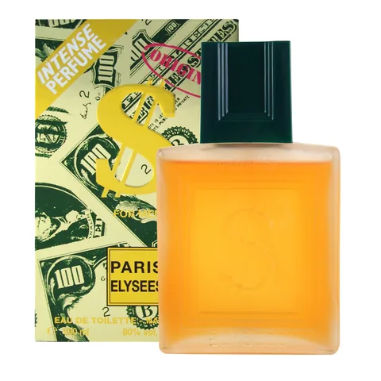
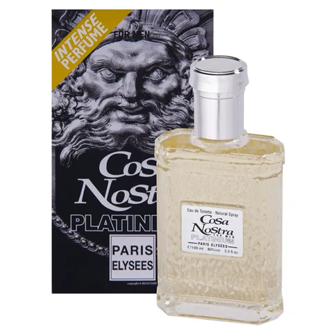
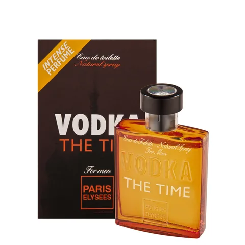
O que é certo
Duas viagens de Antonov fretadas a partir de Orly para abastecer Moscou nas festas, carregadas até a capacidade máxima, com Dollar, King, Cosa Nostra, Number One e Vodka a bordo.
O que é estimado
O ano (1996, o inverno que melhor corresponde ao relato) e o número de frascos, calculado a partir da capacidade de carga de um An-124 (cerca de 120 toneladas por viagem) e do peso de um perfume de 100 ml embalado.
Fontes: Météo Paris (clima): a onda de frio de dezembro de 1996 na Europa · Extreme Weather Watch: temperaturas de Moscou em 26 de dezembro.
Por volta de 2004: a Paris Elysées no Prêmio Contigo, no Copacabana Palace
Poucos anos depois de chegar ao Brasil, a Paris Elysées patrocinou o Prêmio Contigo de TV, a premiação da revista Contigo para os melhores das novelas, realizada no Copacabana Palace, no Rio de Janeiro.
A marca montou um estande no salão do hotel, com uma parede de logotipos onde os convidados posavam para as fotos e uma mesa com os perfumes da época, entre eles a linha Vodka. Atores e atrizes das novelas passaram pelo estande, conheceram as fragrâncias e foram recebidos por Laurent Morcrette, diretor da Paris Elysées no Brasil.
Fotos do arquivo da Paris Elysées (fotógrafo da marca):
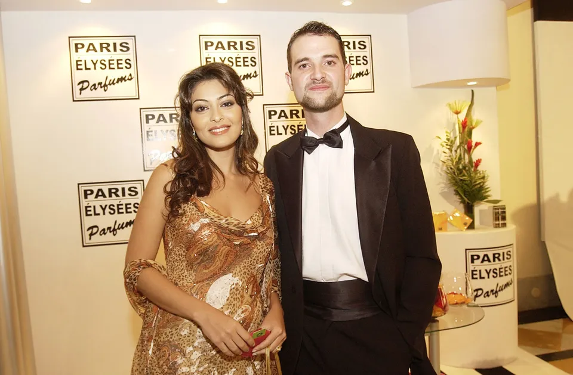
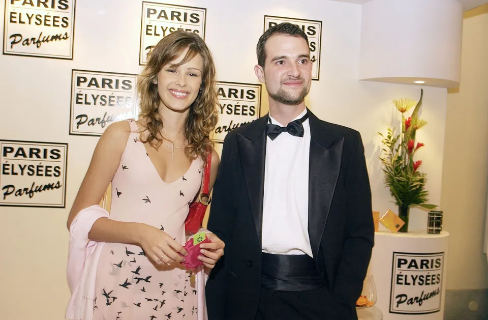
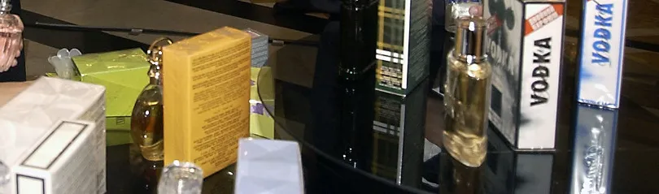
O que é certo
O patrocínio do Prêmio Contigo de TV, o estande da marca no Copacabana Palace e os perfumes expostos, registrados pelo fotógrafo da Paris Elysées.
O que é estimado
O ano exato: a festa aconteceu por volta de 2004, data deduzida a partir dos convidados presentes.
Carnaval de 2008: um carro de perfumes no desfile da Rosas de Ouro
No carnaval de 2008, a escola de samba Rosas de Ouro, uma das mais tradicionais de São Paulo, levou para o Sambódromo do Anhembi o enredo “Rosaessência, o eterno aroma”, inteiro dedicado ao perfume e aos aromas.
A Paris Elysées patrocinou o desfile e ganhou um carro alegórico próprio, decorado com reproduções gigantes dos seus frascos. Foi a maneira de a marca, então com menos de dez anos de Brasil, entrar de vez na festa mais popular do país.
O vídeo abaixo, gravado pela própria Paris Elysées na época, mostra o desfile.
O que é certo
O enredo de 2008 da Rosas de Ouro sobre o perfume e os aromas, o patrocínio da Paris Elysées e o carro alegórico com reproduções dos frascos da marca, registrados no vídeo da época.
O que é lembrança
Os detalhes que não aparecem no vídeo vêm da lembrança da equipe.
Fontes: Samba-enredo 2008 da Rosas de Ouro: “Rosaessência, o eterno aroma”.
Relatos da família fundadora e da equipe Paris Elysées, revisados por Laurent Morcrette. Veja também a história da marca e os perfumes que saíram de linha. Atualizado em 16 de novembro de 2026.